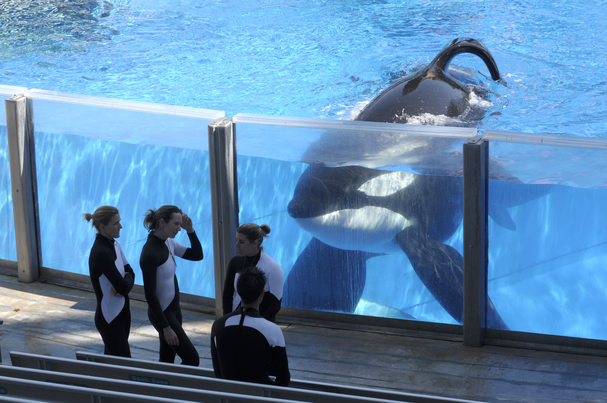

Orcas
In the Wild
1. Males can live up to 60-70 years.
2. Females can live up to 80-100 years.
3. Dorsal fins are only limp when the orca is sick.
4. Orcas are very sociable creatures who can live in groups of up to 15 orcas
5. Orcas usually eat things such as fish, sea birds, squid, sharks, and many other marine animals.
6. Orcas get their hydration from the prey that they catch.
In Captivity
1. At least 156 orcas have been taken into captivity since 1961. This number does not include those which have been born into captivity.
2. 129 of 156 orcas are now dead.
3. At least 49 orcas have died at sea world
4. There have been 166 orcas who have died in captivity, not counting the staggering amount of miscarrages that have happened.
5. Have an average age of 14 with the oldest orca in captivity living to only 30 years old (Kayla).
6. There has only been one reliable report of orcas harming a human while, because of the stress of a non-natural environment, there have been three human deaths and numerous attacks.
7. Most if not all orcas in captivity have a limp dorsal fin which is connected to an unhealthy or sick animal
8. Orcas are forced to live with orcas from other families who don't speak the same language.
9. Because they can't hunt in captivity and are fed unhealthy thawed dead fish, they are fed gelatin (huge amount of it) in order to keep the animal hydrated.
Check out this link for more information.
